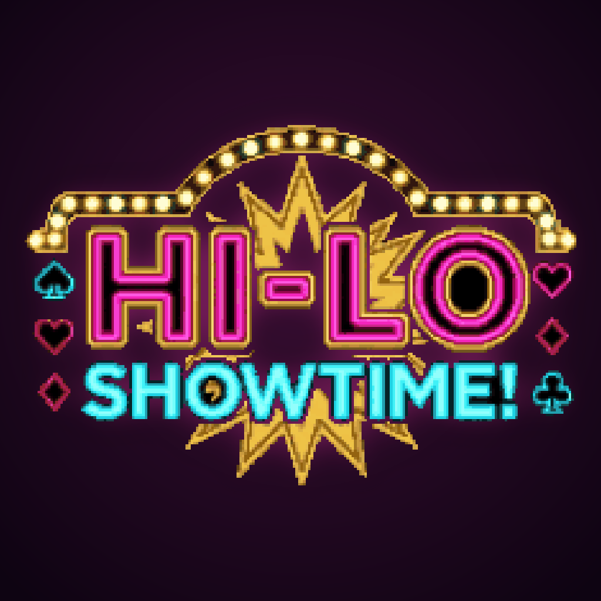

HI-LO SHOWTIME! サポート
次のカードの上か下かを当てるゲームショー
遊び方
- 持ちコイン 100 枚から始めて、次のカードが今より上か下かを当てます。
- 当てにくい賭け方ほど配当が高くなります。5 連続で当てるとゴールデンタイムです。
- ノルマを超えるとステージクリア。3 回外すと脱落です。延長戦は動画を見ると 1 回の出演で 1 度だけ使えます。
よくある質問
Q. 音が鳴りません
iPhone のマナーモード(消音)がオンのときは音が鳴りません。アプリの「設定」で BGM・効果音がオンになっているかもご確認ください。
Q. 広告の表示を変えたい
アプリの「設定 → 広告の同意設定」、または iPhone の「設定 → プライバシーとセキュリティ → トラッキング」から変更できます。
Q. 進捗をリセットしたい
アプリの「設定 → 進捗をリセット」から行えます。元に戻せないのでご注意ください。
Q. 機種変更で進捗を引き継げますか
進捗は端末内にのみ保存しているため、現在は引き継ぎに対応していません。